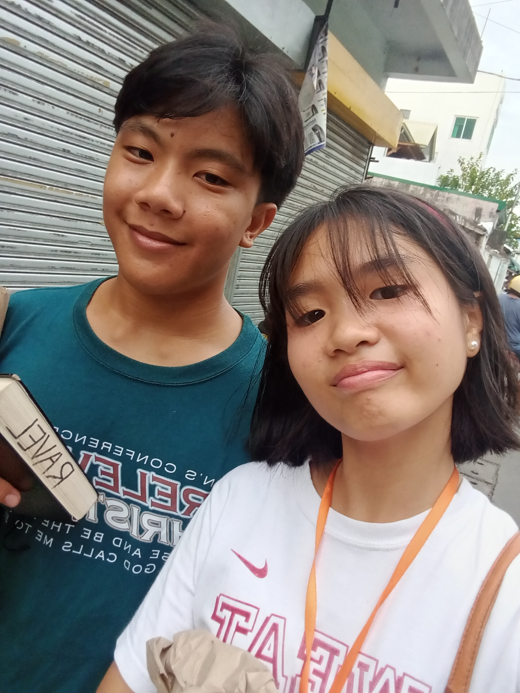
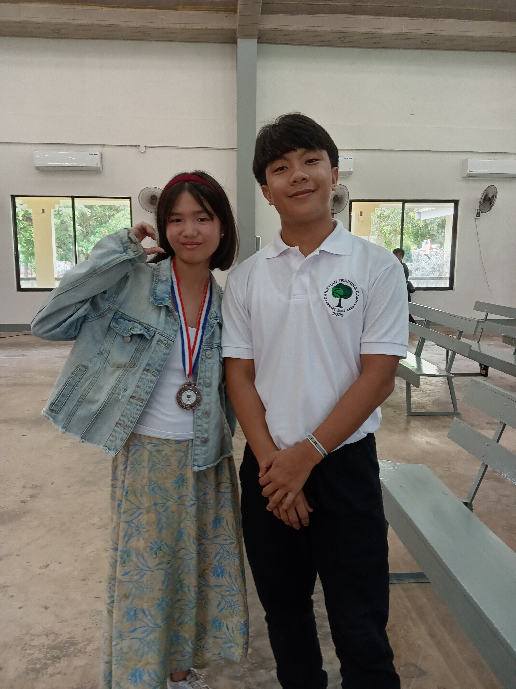
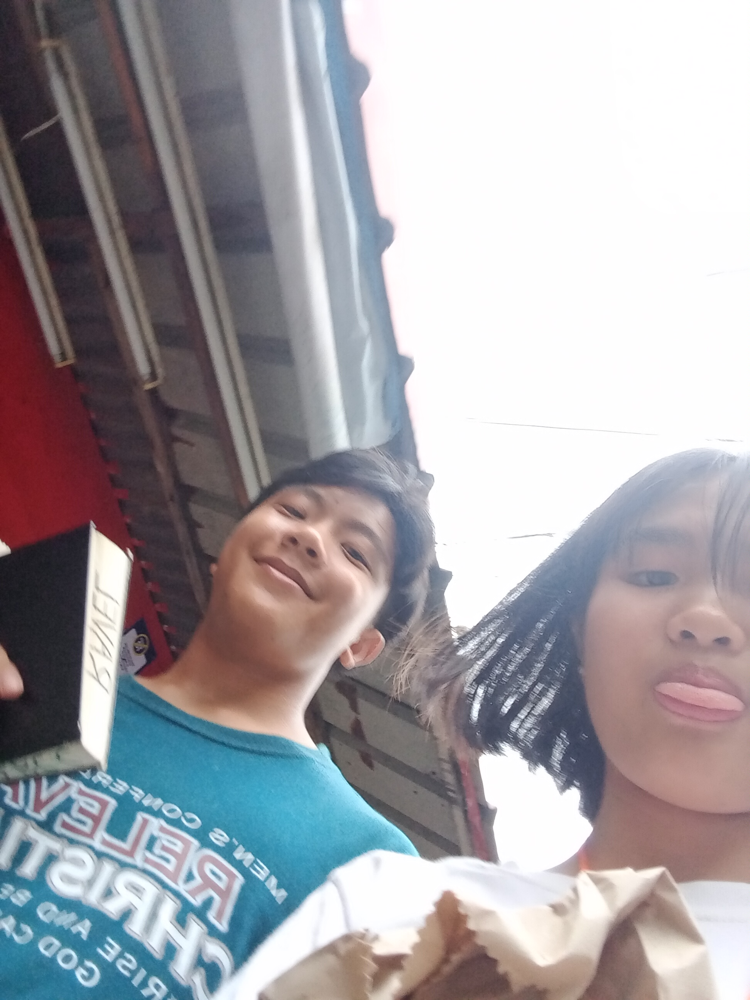
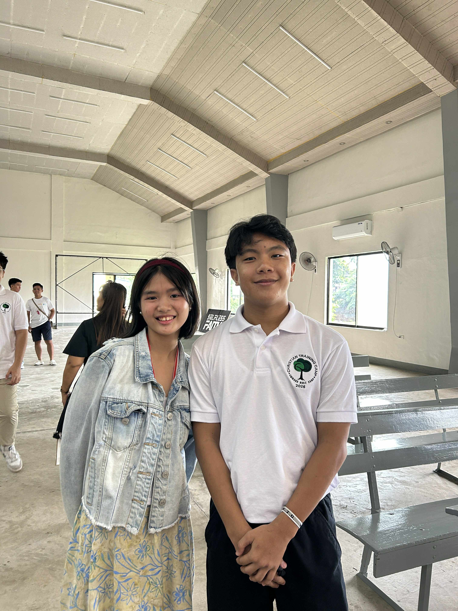
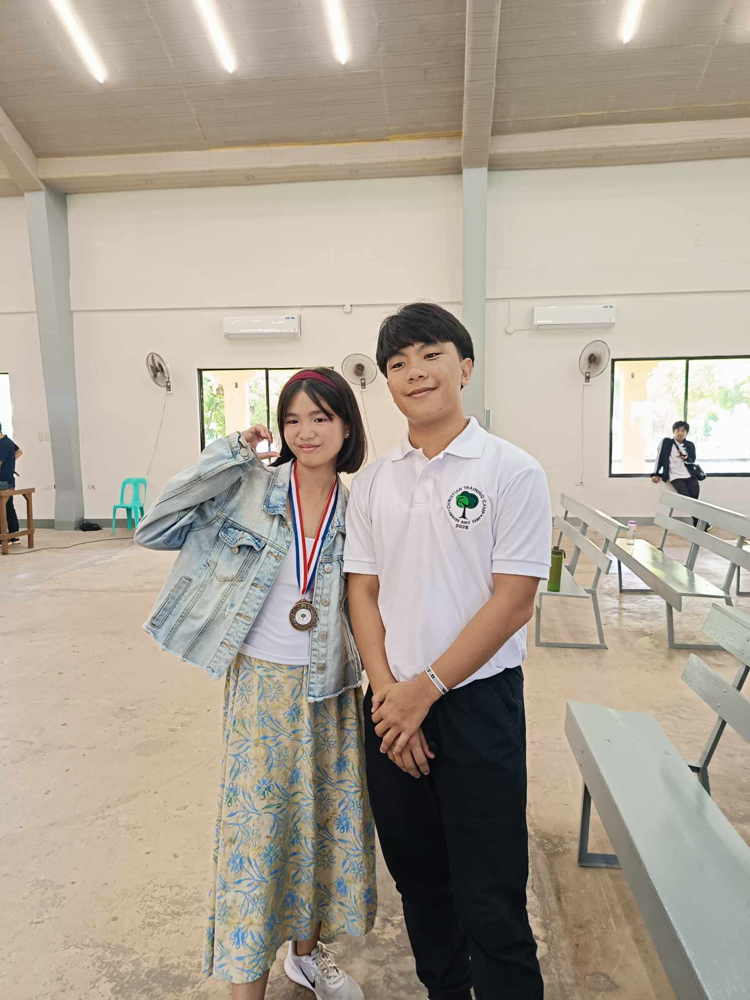
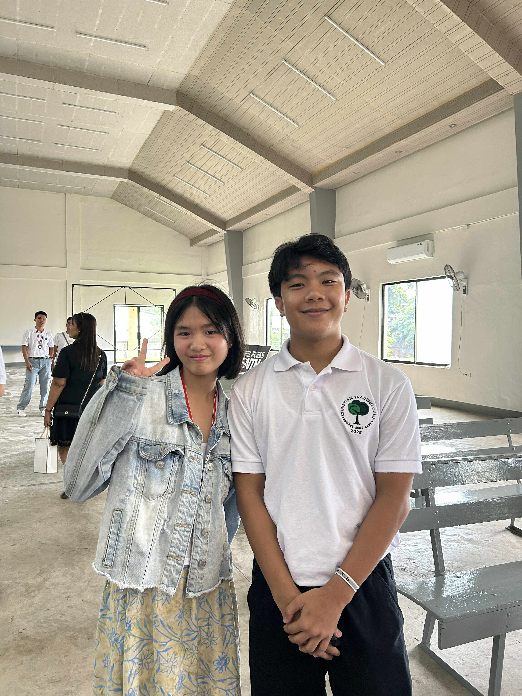
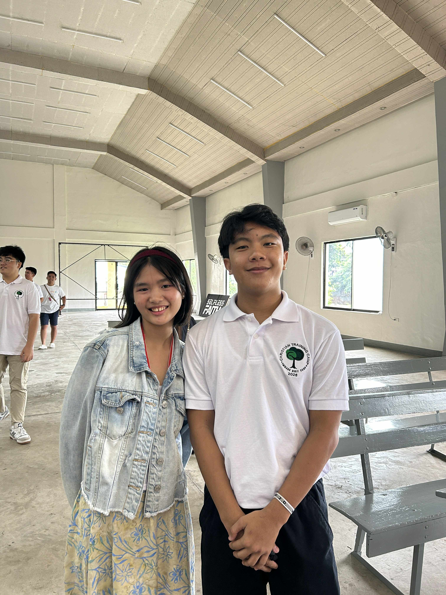

Hindi ko alam kung naniniwala ka sa "love at first sight" kung hindi same lang HAHHAHAHA. Pero kung na papansin mo every time sa subject natin
sa "Personal Evangelism" patingin tingin ako sayo, hindi ko nga alam bakit eh, parang may kakaiba sa aura mo. Tas nung time nag-usap tayo² about pano yung way or flow ng pag share natin ng Evangelism, nung time na sinasabi ko yung flow ng akin, alam mo yun parang may na rararamdaman ako na spark HAHAHHAHAHAHAH.
😂😆
Fast forward, nung nag pipilian na ng partner na makakasama sa Evangelism is na excite ako kasi ouyy 2 lang mag partner tas 1 girl and 1 boy, nung time na tayo yung pipili ng kasama natin, tinawag na ako ni Ate Daisy sabi nya "ouyy Ravel tau na partner" so lumapit na ako nun, sa isip² ko is "ouyyy yess kakilala ko kasama ko" tas ayun na nga lumapit na'ko kay ate Daisy, and then lumapit ka sabi mo tau nalang partner, nahiya na ako tumanggi kaya napa sigee na ako (sinabi ni ate Daisy "bayan ikaw panaman dapat kasama ko), to be honest ikaw talaga gusto makasama nun, kasi may nararamdaman akong kakaiba about sau, at gusto pa kita makakwentuhan, Nung pauwi na tayo tas dumaan tau alfamart balak ko talaga libre kita kahit ano bilin mo, pinipilit kita kasi ayaw mo eh JK HAHAHHAHAHAHAH tas unexpected dumating sila Kurt andami nila (balak ko sana kapag binigay muna sa counter yung binili mo aabot kuna agad pera ko para wala kana magawa parang nung bumili ako ng coke mismo HAHHAHAHA😂😆), tas nung time pabalik na tau sa chapel sinasabi ko sa kanila sa labas picture tayo lahat, para may pang MyDay o Documentation tas iniwan nila tayo HAHAHHAHAHAHAH kaya 2 nalang tayo natira, dina ako nag dalawang isip kaya nakapag picture na tayo at Vid, dun naman sa vid dumating sila Akiss HAHHAHAHAHHAHAHA kaya okay lang din kasi memories yun.
Tas nung pa-uwi na inaasar ko si kuya Jeff na mag pa picture kay Keicee tinulak ko siya nun, kaso after nun binawian ako tas tumawag pa ng kasama, habang nag papaalam na ako lumabas kasi papalit na damit, wag daw muna makipag pa picture daw muna ako sau. At ayun dun nag start haba ng kwento ko no daldal ko kasi eh HAHHAHAHA.
😂😂
Hindi pa tapos dun may pa habol pa!!😆😂 Saya ko rin eh nung nalaman ko na tiga Silang kalang napasabi ko na Lord Sign naba to?
HAHAHHAHAHAHAH 😂😆
Kaya yung time na umuwi ako nag pray ako kay Lord sabi ko "Lord ipaunawa nyo po sakin yung nararamdaman ko" tas naalala ko yung sinasabi samin lagi ng mga kuya na "Wag mong hayaan ang Puso ang manaiig kasi ang puso natin ay makasalanan" gusto ko lang i-relate na hindi ako nag padala sa bugso ng damdamin hahahhaha kaya lumalapit talaga ako kay Lord na "Lord kalooban nyo po ang masunod hindi ang kalooban ng aking puso" sana na gets mo HAHAHHAHAHAHAH.
😆😂







Final thoughts
Last na'to saka nga pala hindi ako umamin para manligaw agad na pipilitin ka para mapasakin ka HAHAHHAHAHAHAH. 😆😂 (Sabi nga sa Isaiah 60:22 "At the right time, I, the Lord, will make it happen"" gusto ko lang i point is sa ngayun focus muna tayo sa Ministry natin sa ating Local Church at sa pag-aaral)
Ginawa ko'to para mawala rin ang bumabagabag sa damdamin ko (ayy damdamin? 😂😆) at okay lang kahit hindi mo din ako crush, bakit mapipigilan mo yung nararamdaman ko? HAHAHHAHAHAHAH 😂😆 angas mo namna kung ganun. 😂😆. Si Lord na bahala kung ano mangyayari saakin at sayo, Sabi nga sa Kantang " Trust in God 'I sought the Lord and He heard and He answered' ". Yun lang sasabihin ko.🤗
Chat mo'ko kapag nabasa mo nato AHhh, Thank you sa pagbasa and God bless!! 🤗😊
Sana maulit itong nasa Vid,na mag share tau ng gospel (sana 1 time maaya kita lumabas at hindi para gumala kundi para magbahagi ng Mabuting Balita HEHEHHE😊😁